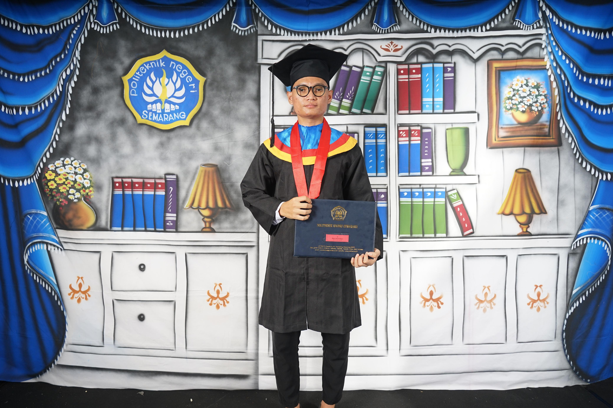
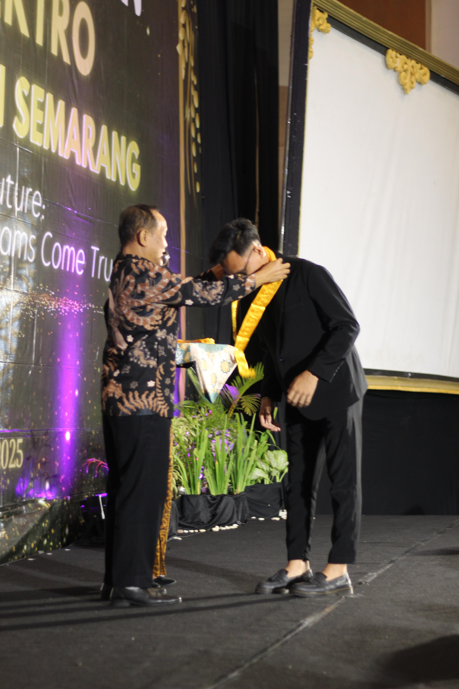
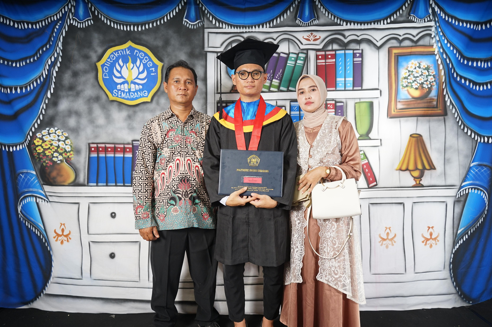

Profile
I am a Fresh Graduate in Electrical Engineering with a strong interest in electronics, control systems, and the Internet of Things (IoT). During my studies, I actively developed skills in designing and analyzing electronic circuits, programming microcontrollers, and integrating hardware with software. I also gained internship experience as a Maintenance Operation for 4 months. In addition, I served as the Event Coordinator for the ORMAWA CUP Program and actively participated in sports competitions. As an active student both on and off campus, I possess strong interpersonal, analytical, and critical thinking skills that enable me to plan strategically and solve problems effectively.
Education



Politeknik Negeri Semarang (D3 Teknik Elektronika)
Fokus pada pengembangan Sistem Kontrol, Mikrokontroler, dan Desain PCB. Aktif dalam kegiatan organisasi BEM sebagai Koordinator Lapangan ORMAWA CUP serta menjadi Kapten Tim Futsal Teknik Elektro (Juara 2 Elektro CUP).
Work Experience
Maintenance Operation Intern
Melakukan pemeliharaan operasional, pengecekan komponen kontrol elektronik, serta tindakan perawatan korektif dan preventif mesin industri.
Research and Projects


Riset & Pengalaman Teknis
Pengembangan Sistem Monitoring berbasis IoT (MQTT), Pemrograman Mikrokontroler & Otomasi PLC, serta Perancangan Skematik dan Layout PCB menggunakan Proteus & EasyEDA.